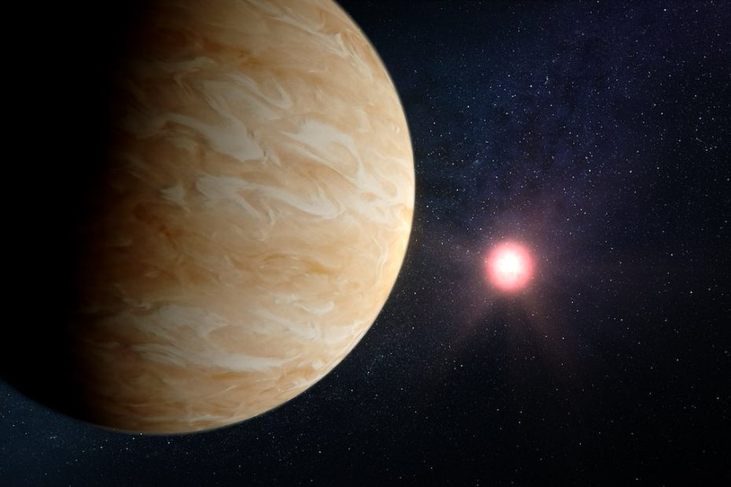

ကမ္ဘာနဲ့ အလင်းနှစ် ၄၀ လောက် ဝေးတဲ့နေရာမှာ ဂြိုဟ်တစ်စင်း ရှိပါတယ်။ GJ 1214b လို့ အမည်ပေးထားတဲ့ ဒီဂြိုဟ်ဟာ ထူထပ်တဲ့ တိမ်တွေနဲ့ အမြဲ ဖုံးလွှမ်းနေပါတယ်။ ဒါ့ကြောင့် ဒီ တိမ်တွေရဲ့ အောက်မှာ ဘာရှိမလဲ ဆိုတာ ပညာရှင်တွေ မသိနိုင် ခဲ့ကြပါဘူး။
ဒီဂြိုဟ်ဟာ mini-neptune ဂြိုဟ် အမျိုးအစား တစ်ခု ဖြစ်ပါတယ်။ ဒီ မီနီနက်ပ်ကျွန်း (နက်ပ်ကျွန်း အသေးစား) လေးတွေဟာ နက်ပ်ကျွန်းဂြိုဟ် လိုပဲ ထူထပ်တဲ့ ဟိုက်ဒြိုဂျင် နဲ့ ဟီလီယံ လေထု ရှိကြပါတယ်။ သူ့ရဲ့ အတွင်းထဲ မှာတော့ ရေခဲ၊ ကျောက်တုံး တွေနဲ့ အရည်ပျော်နေတဲ့ ပင်လယ်တွေ ရှိနိုင်မယ်လို့ ပညာရှင် တွေက မှန်းဆ ကြပါတယ်။
အခုထိတော့ ဒါဟာ မှန်းဆချက် တခုသာ ဖြစ်ပြီး ဒီ မီနီနက်ပ်ကျွန်း တွေရဲ့ ထူထပ်တဲ့ တိမ်လွှာထုအောက်မှာ ဘာတွေ ရှိလဲ ဆိုတာကို ဘယ်သူမှတော့ အသေအခြာ မသိကြ သေးပါဘူး။
ဒါပေမယ့် အခုတော့ ဂျိမ်းစ်ဝက်ဘ် အာကာသ တယ်လီစကုပ်ကြီး (James Webb Space Telescope) ရဲ့ အကူအညီနဲ့ ဒီတိမ်တွေကို ဖေါက်ထွင်းပြီး ဂြိုဟ်ရဲ့ မျက်နှာပြင်ကို ပညာရှင်တွေ လေ့လာခွင့် ရခဲ့ကြပါပြီ။
ဂျိမ်စ်ဝက်ဘ်မှာ တပ်ဆင်ထားတဲ့ အလွန် အားကောင်းတဲ့ အနီအောက်ရောင်ခြည် ကင်မရာ တွေရဲ့ အကူအညီနဲ့ နက္ခတ် ပညာရှင် တွေဟာ တိမ်တွေကို ဖေါက်ထွင်းပြီး ဒီဂြိုဟ်ရဲ့ မျက်နှာပြင်ကို လေ့လာနိုင် ခဲ့ကြတာ ဖြစ်ပါတယ်။ သူတို့ရဲ့ တွေ့ရှိချက် တွေကို ပြီးခဲ့တဲ့ မေလ ၁၀ ရက်နေ့ထုတ် Nature သိပ္ပံ သုတေသန ဂျာနယ်မှာ တင်ပြ ထားကြပါတယ်။
ဒီ လေ့လာချက်အရ GJ 1214b ရဲ့ လေထုထဲမှာ ရေငွေ့ အများအပြား ပါဝင် နေတာကို တွေ့ခဲ့ ကြရပါတယ်။ ဒါဟာ ဘာကိုညွှန်ပြနေလဲ ဆိုတော့ ရှေးယခင် တချိန်က ဒီဂြိုဟ်ဟာ သမုဒ္ဒရာ ရေပင်လယ်ကြီး ဖုံးလွှမ်းနေတဲ့ Water World ကြီး တစ်ခုဖြစ်တယ် ဆိုတာကိုပဲ ဖြစ်ပါတယ်။
ဒီဂြိုဟ်ကို ရှာတွေ့ချိန် လွန်ခဲ့တဲ့ ဆယ်နှစ် ခန့်ကစလို့ ယခုအထိ သိပ္ပံ ပညာရှင်တွေ သိခဲ့တာက ဒီဂြိုဟ်ဟာ အလွန်ထူထပ်တဲ့ တိမ်တွေနဲ့ ဖုံးလွှမ်းနေတယ် ဆိုတာ တစ်ခုပဲ ဖြစ်ပါတယ်။
အခုလို လေ့လာနိုင်တယ် ဆိုတာကလဲ မှန်ဘီလူးနဲ့ တိုက်ရိုက် မြင်တွေ့နိုင်တာတော့ မဟုတ်ပါဘူး။ နာဆာရဲ့ NASA’s Jet Propulsion Lab က နက္ခတ် ပညာရှင်တွေဟာ ဒီဂြိုဟ်ရဲ့ နေ့နဲ့ည မျက်နှာပြင် အပူချိန်ကို ရက်ပေါင်းများစွာ မှတ်တမ်းယူပြီးတော့မှ သင်္ချာနည်းနဲ့ တွက်ချက် အဖြေထုတ် ခဲ့ကြတာ ဖြစ်ပါတယ်။
ဒီ GJ 1214b ရဲ့ နေ့နဲ့ည အပူချိန်ဟာ ကွာဟချက် အလွန်ပဲ များပါတယ်။ နေ့ဖက် ကျရောက်တဲ့အချိန် အပူချိန်ဟာ ဒီဂရီ စင်တီဂရိတ် ၂၈၀ ခန့်အထိ ပူပြင်းပြီး ညဖက် အပူချိန် ကတော့ ဒီဂရီ စင်တီဂရိတ် ၂၂၀ လောက်ထိ ကျဆင်း သွားပါတယ်။
ဒီလို နေ့နဲ့ည အကြား ၆၀ ဒီဂရီ စင်တီဂရိတ်ခန့် ကွာဟမှုဟာ ကမ္ဘာပေါ်မှာ ဘယ်နေရာမှာမှ မတွေ့ဖူးတဲ့ ကွာဟမှု ဖြစ်ပါတယ်။ ဘာနဲ့ တူလဲဆိုတော့ နေ့ဖက်မှာ ဆာဟာရ သဲကန္တာရထဲ ရောက်နေပြီး ညဖက်မှာ ဝင်ရိုးစွန်းက နှင်းမုန်တိုင်းထဲ ရောက်သွားသလို ခြားနားတဲ့ အပူချိန် ကွာဟချက်မျိုး ဖြစ်ပါတယ်။
ဒီလောက် ကြီးမားတဲ့ အပူချိန် ကွာဟချက်က ဘာကို ညွှန်ပြနေလဲ ဆိုတော့ ဒီဂြိုဟ်ရဲ့ လေထုဟာ ယခင် ယူဆခဲ့ သလို ပေါ့ပါးတဲ့ ဟိုက်ဒြိုဂျင် ဓါတ်ငွေ့သက်သက်နဲ့ ဖွဲ့စည်းထားတာ မဟုတ်ဘူး ဆိုတာပဲ ဖြစ်ပါတယ်။ ဒီ့အစား လေထုထဲမှာ ရေငွေ့ (သို့) မိသိန်း ဓါတ်ငွေ့လို လေးလံတဲ့ ဓါတ်ငွေ့ မော်လီကျူးတွေ အများအပြား ပါဝင် နေရမယ်လို့ ကောက်ချက် ဆွဲကြပါတယ်။
ဒီအချက်ဟာ ဒီဂြိုဟ်ရဲ့ အတိတ်က ဘဝကို တစိတ်တပိုင်း လှစ်ဟ ပြနေပါတယ်။ နာဆာ ပညာရှင် တွေရဲ့ အဆိုအရ ဒီဂြိုဟ်ဟာ စတင် ဖွဲ့စည်း ခဲ့ချိန်က ရေ၊ ရေခဲ (သို့) ရေပါဝင်တဲ့ မော်လီကျုး အများအပြားနဲ့ ဖွဲ့စည်း ခဲ့ဟန် တူတယ်လို့ ဆိုပါတယ်။ အကယ်လို့ ဒီလို မဟုတ်ပဲ မူလက ဟိုက်ဒြိုဂျင် ဓါတ်ငွေ့ အများအပြားနဲ့ စတင်ခဲ့မယ် ဆိုရင်လဲ သူ့ရဲ့ ဘဝသက်တမ်း တလျောက် ဟိုက်ဒြိုဂျင် အမြောက်အများကို အာကာသထဲ လွင့်ထွက် ဆုံးရှုံးခဲ့တာမျိုးလဲ ဖြစ်နိုင်ပါတယ်။
အရှင်းဆုံး အဖြေကတော့ မူလကတဲက ရေအများအပြားနဲ့ ပါဝင်ဖွဲ့စည်း ဖြစ်ထွန်းခဲ့တာ ဖြစ်ဖို့ ပိုများပါတယ်။ နောက်ပြီး စတင် မွေးဖွားချိန်က ယခု ပတ်လမ်းမှာ မဟုတ်ပဲ မိခင်ကြယ်နဲ့ ပိုဝေးတဲ့ နေရာမှ ဖြစ်ပေါ် မွေးဖွားခဲ့ပြီးမှ မိခင်ကြယ်နဲ့ နီးကပ်တဲ့ ပတ်လမ်းကို အကြောင်း တခုခုနဲ့ ရောက်လာတာ ဖြစ်နိုင်တယ်လို့ သုံးသပ် ကြပါတယ်။
ဒီ GJ 1214b လို mini-Neptune တွေနဲ့ ပါတ်သက်ပြီး လေ့လာစရာတွေ အများကြီး ကျန်နေပါသေးတယ်။ ပညာရှင် တွေကတော့ James Webb တယ်လီစကုပ်ကြီးကို အသုံးချပြီး နောက်ထပ် မီနီနက်ပ်ကျွန်း အများအပြားကို ဆက်လက် လေ့လာသွားဖို့ စီစဉ်နေ ကြပါတယ်။
Ref: James Webb telescope discovers ancient ‘water world’ in nearby star system | Live Science
ဂျိမ်းစ်ဝက်ဘ် က ရှာဖွေပေးတဲ့ ရှေးဟောင်း သမုဒ္ဒရာ ဂြိုဟ်

May 30, 2023
Other Posts
- သင့်ကလေးကို ဘယ်လိုစာဖတ်ပြမလဲ
- ဥက္ကာပျံကြီး တစ်စင်း ကမ္ဘာနဲ့ လ ကြားက ဖြတ်ပျံသွား
- အိုင်းစတိုင်း၏ လက်ရေးစာတမ်း ဒေါ်လာ ၁၃ သန်းနှင့် ရောင်းချ
- James Webb ရဲ့ ကြည်လင် ပြတ်သားသော ပုံရိပ် နာဆာထုတ်ပြန်
- ပင်လယ်ထဲက ပလတ်စတစ် အမှိုက်ရှင်းမယ့် နည်းပညာသစ်
- နေက အောက်ဆီဂျင် မရှိပဲ ဘယ်လိုလောင်ကျွမ်းနေသလဲ
- လဟာ ကမ္ဘာကနေ ဘာ့ကြောင့် ဝေးရာကို ပြေးထွက်နေရတာလဲ
- စကြာဝဠာကနဦးမှ ရှေးအကျဆုံး black hole တွင်းနက်ကြီး ဂျိမ်းစ်ဝက်ဘ် ရှာတွေ့
- Wormholes တွေကို ဖြတ်ပြီး ခရီးသွားဖို့ ဖြစ်နိုင်မလား
- စိန့်ဗယ်လင်တိုင်းရဲ့ မျက်နှာကို ပညာရှင်များက 3D ဖြင့်ပြန်ပုံဖေါ်